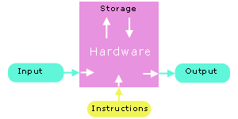
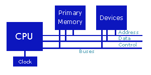
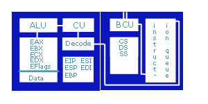

|
Development |

|
|
Programming Computers Introduce the art of software development "The most likely way for the world to be destroyed, most experts agree, is by accident. That's where we come in. We're computer professionals. We cause accidents." Nathaniel Borenstein (1991). Accidents | Software Development | Hardware | ExercisesAccidents In May 2004, the Royal Bank of Canada informed the public that some of its transactions had not been properly reflected in its client balances. The bank cited glitches in the transaction processing system of one of its computer programs as the cause. One month later, the bank reported that "as many as 10 million customers" had been affected and that a "relatively small number" of programming statements had introduced the problem. The bank faced a class-action suit for damages of $500 per customer and a possible loss of $165 million in service fees. In July 2004, the Canadian Imperial Bank of Commerce reported that its computer system had been affected by glitches. The system had double dipped about 60,000 personal lines of credit. In June 1996, the European Space Agency Ariane 5 maiden rocket self-destructed after going out of control because of a software error.
To minimize such accidents, we build quality into the software that we develop. We design it for, amongst other features,
Software Development Software development is applications oriented from the outset. The programs that we develop are simulations of solutions to stated problems. The development process includes problem analysis, algorithm design, program coding, program testing and program maintainance. This strip caricatures the outcomes of the process. A program is a set of instructions that computer hardware will execute. The instructions transform raw data (the input) into information and eventually into comprehensible results (the output). The hardware stores the data internally during this process.  Hardware The hardware components of a modern computer include a central processing unit, a clock, primary memory and a set of devices. These components are interconnected by buses - an address bus, a data bus, and a control bus.  The buses carry information between the hardware components. Central Processing Unit We can divide the Central Processing Unit (CPU) into two logical units:
 The EU executes the instructions one at a time. The BIU manages the transfer of information along the data bus to and from the EU. A more detailed view of the CPU reveals its various components.  The BIU fetches instructions and places them in the instruction queue. The BIU includes:
The EU includes:
The ALU only works on register data. The data must be in the registers before the ALU can work on it. CPU memory is volatile - the contents of the registers are lost as soon as power is turned off. Primary Memory Primary memory holds the information accessed by the CPU. Primary memory is also volatile - its contents are lost as soon as power is turned off. The popular term for primary memory is RAM (Random Access Memory). The original term was 'store'. Primary memory holds the program instructions and the program data. Before 1945, computers had been designed to accept instructions from either paper tape or pre-wired plugboards. The data was stored in memory while the instructions were stored on external devices. In 1945, John von Neumann noted that instructions were simply pieces of information, regardless of the device on which they happened to be stored. In this respect, they were just like data. He proposed a new computer called the EDVAC, in which the instructions would be stored alongside program data in primary memory. This idea has come to be known as the stored-program concept. All modern computers are designed as stored-program computers. When we start executing a program, the operating system loads the program instructions and data into primary memory. A loaded program consists of three separate segments:
The BIU holds the address of each segment. Devices Devices in a modern computer include input/output devices such as a keyboard, a monitor and a mouse and storage devices such as a floppy drive, a hard drive and a CD-ROM drive. Each device interfaces with the system buses through a device controller. Hard drives, floppy drives and CD-ROMs provide the secondary storage. Unlike CPU registers or primary memory, secondary storage is not volative - it retains information when power is turned off. Secondary storage is inexpensive compared to primary memory, but access to secondary storage is considerably slower. The most expensive and fastest memory - registers - is reserved for the CPU.
A nanosecond is 1 * 10-9 seconds. The ratio of the time that a CPU takes to transfer information to the time that a hard disk takes to transfer that same information is the ratio of the time that a person takes to cross a classroom to the time that another person takes to walk around the earth once at an identical pace. Exercises
|
||||||||||||||||||||||||||||||||||||||||||||||||||
{kind=link}
|
|
Top
|
|
|
Next: Information
|
| Designed by Chris Szalwinski | Copying From This Site |